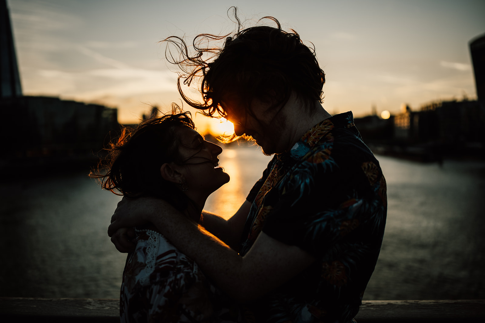

We met at First Light Games in the summer of 2022, where we were working together on a game called Blast Royale. We quickly became close, getting to know each other through spirited lunchtime debates about whether or not Dota 2 is better than League of Legends, hosting livestreams together, and gossiping over pints at Friday night work drinks.
We worked well together and made each other laugh; our friendship deepened as we talked about our lives and the surprising similarities we shared in our upbringing, even though Tiryon grew up in Australia and Isobel in Canada. Before we knew it, we were spending more and more time together outside of work.
At the end of the year, the inevitable work Christmas party arrived. Both of us were emboldened by free booze and our respective terrible karaoke performances, so we finally worked up the courage to admit our feelings to one another, and the rest is history.